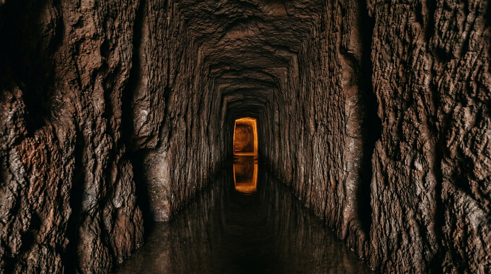

L'emissario romano del 398 a.C. — 2.400 anni di ingegneria.

Un cunicolo scavato nel tufo vulcanico, largo poco più di un metro e alto due, che dal Lago Albano corre sotto la cinta del cratere e sbocca dall'altra parte, in località Le Mole, sotto Castel Gandolfo. È lungo circa 1.450 metri, ha una pendenza dello 0,14 per mille e funziona ancora. Il fatto notevole è che sia stato scavato alla fine del IV secolo a.C., a mano, senza polveri esplosive né macchinari.
L'oracolo di Delfi e Veio
La storia dell'emissario del Lago Albano si intreccia con quella di Roma. Nel 398 a.C. le acque del lago iniziano a salire senza cause apparenti — né piogge eccezionali né fiumi immissari. Tito Livio racconta l'episodio nel V libro Ab Urbe condita: mentre i Romani sono impegnati nel lungo assedio della città etrusca di Veio, il fenomeno viene interpretato come un prodigio ([Wikipedia — Lago Albano](https://it.wikipedia.org/wiki/Lago_Albano)).
Consultato l'oracolo di Delfi, la risposta è netta: Roma vincerà Veio solo quando le acque del lago saranno incanalate e utilizzate per irrigare i campi ([Parchi Lazio — L'emissario romano](https://www.parchilazio.it/schede-594-l_emissario_romano)). La costruzione del tunnel diventa così opera insieme religiosa, politica e idraulica. Secondo la tradizione l'intera opera viene compiuta in un solo anno, fra il 398 e il 397 a.C., con l'impiego di circa trentamila uomini ([Italia.it — Lago di Albano](https://www.italia.it/it/lazio/roma/parco-dei-castelli-romani/lago-di-albano)).
La geometria del cunicolo
Le misure sono note grazie ai rilievi speleologici del Novecento e ai lavori più recenti del Progetto Albanus. Il tunnel è lungo circa 1.450 metri, con larghezza media di 1,20 metri e altezza di 2 metri, in origine di sezione rettangolare. Sbocca in località Le Mole, sotto Castel Gandolfo, dopo aver attraversato la parete occidentale del cratere ([Wikipedia — Lago Albano](https://it.wikipedia.org/wiki/Lago_Albano)).
La pendenza è minima ma costante: circa 0,14 per mille. Un valore studiato con precisione, sufficiente a garantire il deflusso per gravità senza accumulo di sedimenti. Cinque pozzi verticali collegavano la superficie al cunicolo per la ventilazione e per l'evacuazione del materiale scavato durante i lavori ([Lake Albano — Wikipedia EN](https://en.wikipedia.org/wiki/Lake_Albano)). La camera di manovra all'imbocco, in opera quadrata di peperino, si conserva ancora oggi per oltre cinque metri di altezza; fu restaurata in età sillana, all'inizio del I secolo a.C.
Come si scavava un tunnel così
Il metodo era quello dei cuniculi, tecnica idraulica sviluppata nel Lazio antico probabilmente con contributi etruschi e greci ([Progetto Albanus — Hypogea](https://speleology.wordpress.com/attivita-2/emissario-del-lago-albano-progetto-albanus/)). Si aprivano pozzi verticali lungo il tracciato previsto; da ciascun pozzo due squadre di operai scavavano orizzontalmente in direzioni opposte, incontrandosi a metà strada. Il progetto richiedeva topografi capaci di trasmettere in profondità un allineamento e una quota con precisione millimetrica: ogni deviazione avrebbe compromesso il deflusso.
Lo strumento di lavoro era il piccone e la mazza; il materiale scavato veniva sollevato in superficie con cesti e argani. Il tufo vulcanico dei Colli Albani è tenero appena estratto e indurisce al contatto con l'aria: una condizione che rendeva possibile l'avanzamento e insieme garantiva la tenuta strutturale del cunicolo una volta ultimato.
Prima della Cloaca Massima
La tradizione storica pone l'emissario Albano tra le più antiche opere cunicolari romane documentate, seconda solo alla Cloaca Massima ([Progetto Albanus — Hypogea](https://speleology.wordpress.com/attivita-2/emissario-del-lago-albano-progetto-albanus/)). Il tunnel è sottoposto a vincolo di tutela con Decreto Ministeriale del 20 ottobre 1909 ed è oggi patrimonio culturale dello Stato. Il FAI lo ha censito fra i Luoghi del Cuore ([FAI — Emissario Lago Albano](https://fondoambiente.it/luoghi/emissario-del-lago-albano)).
“Sine ullis caelestibus aquis causave qua alia, quae rem miraculo eximeret.”Tito Livio, V, 15, 2 — le acque del lago crebbero senza piogge né altra causa che spiegasse il prodigio
Gli esploratori del Novecento
L'emissario resta praticamente inaccessibile fino al 1955, quando il Circolo Speleologico Romano ne effettua la prima esplorazione moderna su richiesta del Comune di Albano, allarmato da un calo nella portata. Nei decenni successivi si susseguono tentativi speleologici resi difficili da acqua, fango, frane e concrezioni calcaree che riducono la sezione del cunicolo.
Nel 2013 prende il via il Progetto Albanus, coordinato dalla Federazione Hypogea. È il primo studio sistematico e pluriennale del tunnel, condotto con tecniche speleologiche, speleosubacquee e strumenti di documentazione avanzati. Un articolo su Castelli Notizie del luglio 2023 riporta che i ricercatori hanno percorso circa 36 metri dall'incile di via dei Pescatori e altri 950 metri dall'ingresso di via delle Mole; restano inesplorati circa 400 metri centrali, ostruiti da acqua e fango ([Castelli Notizie](https://www.castellinotizie.it/2023/07/02/laffascinante-studio-dellemissario-del-lago-albano-1-420-metri-da-via-dei-pescatori-a-castel-gandolfo-ai-vasconi-di-albano/)).
Perché ancora funziona
La ragione ingegneristica è la stessa che ha fatto scuola per due millenni: geometria semplice, pendenza costante, materiali locali. Il tufo resiste all'erosione dell'acqua e non richiede rivestimenti; la pendenza contenuta evita usura meccanica delle pareti; la sezione stretta favorisce la velocità di deflusso e riduce la sedimentazione. Modelli matematici moderni condotti dalla rivista Idrotecnica Italiana hanno confermato che il condotto è efficace nel contenere le oscillazioni di livello del lago anche in presenza di eventi meteorologici severi ([Idrotecnica Italiana](https://www.idrotecnicaitaliana.it/sommari/lantico-emissario-del-lago-di-albano-ipotesi-sulle-origini-ed-il-suo-ruolo-nel-tempo/)).
Nel Medioevo l'acqua in uscita dal cunicolo alimentò i mulini della località Le Mole, da cui il toponimo. Ancora oggi il flusso residuo va a irrigare i terreni agricoli a valle: la profezia dell'oracolo, in un certo senso, continua a compiersi.